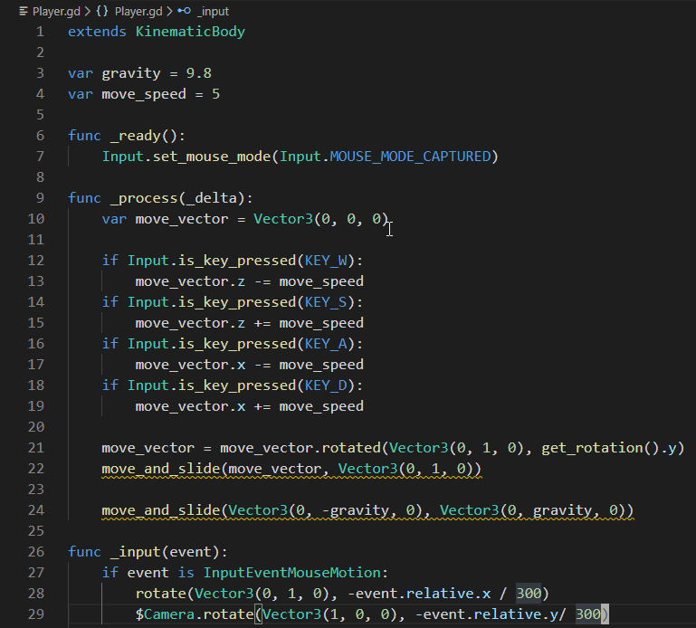

Godot as an Alternative to Unity and Unreal
Although I have never considered myself serious about developing a game of my own, I still enjoy keeping up with the tools that are available for modern game development and experimenting with them myself. For many years, Unity and Unreal have been the two primary engines that are most commonly used by game developers who do not wish to build their own from scratch, but as of lately the Godot engine has been rising in popularity and it has quickly become my favorite out of all the engines I have tried.
One of the most impressive things about Godot is just how lightweight the engine is. The engine is entirely self contained, requiring no installer, and is only 60 mb. Last I checked, the Unity engine was well over 500 mb, and Unreal is upwards of 10 gb. Admittedly, Godot is not as feature rich as Unreal or Unity, but I find many of the added "features" of those engines to be extraneous. Godot also boots in seconds, even on a slow hard drive. Unreal on the other hand is practically unusable unless you have an SSD. Perhaps the best thing about Godot is the fact that the engine is completely free to use and open source. Unity is closed source and parts of Unreal are open source, but both of those engines will charge you if you make a certain amount of money with them. Godot has no strings attached in and is released under the extremely permissive MIT license. The license is so permissive that you can even resell a completely unmodified version of the engine itself. There is of course no reason for anybody to buy the engine from you when they could get it for free from Godot's website, but you can still legally do it.
The workflow of Godot is great, and in my opnion it is the easiest engine to rapidly prototype in. Godot allows you to choose between two primary means of programming game logic, using either C# or GodotScript. I prefer using GodotScript due to its python like syntax. It is in this category that I believe Godot excels. I personally hate the current workflow of Unreal. In Unreal you are forced add game logic through the engines visual scripting solution known as blueprints, or by using C++. Neither choice is great. I am not a fan of visual scripting and I often find it to be a cumbersome and visually cluttered approach. C++ would be a better solution if it was not for the fact that if you try to run code that fails to compile it will often crash the entire editor. This is especially bothersome because the engine is already extremely slow to boot.

In order to demonstrate just how easy it is program quickly in GodotScript I have included the code required for a simple first person controller.
In a single script that is less than 30 lines of code (including optional empty lines for readability) I was able to create controls for a first person character.
This ease of use carries over to all things scripting related. I am consistently impressed by just how easy it is to implement seemingly complex features
in this engine.
Click here to download Godot